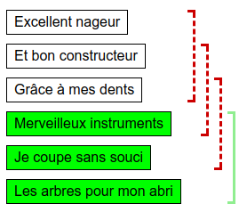
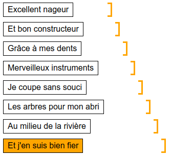
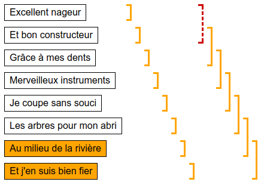
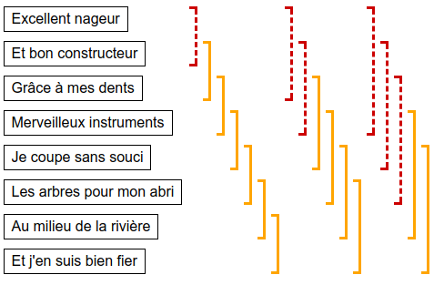
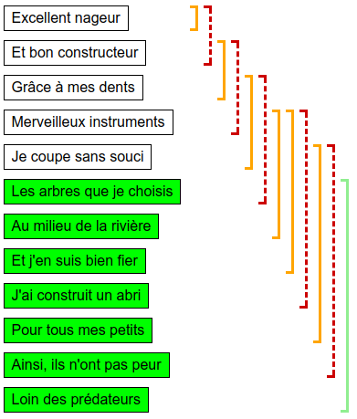

Alla on hakutyökalu, jolla voi etsiä vasemmalla annettujen ranskankielisten rivien yhdestä tai useammasta peräkkäisestä rivistä koostuvan jakson esiintymiä kirjaston kirjoista.
Etsi työkalun avulla jokin kolmen peräkkäisen rivin jakso, joka löytyy kirjastosta. Jokin sellainen löytyy varmasti.
Etsi työkalun avulla pisin (eniten rivejä sisältävä) peräkkäisten rivien jakso, joka löytyy kirjastosta. Jokin jakso löytyy varmasti.
Saat tehdä korkeintaan hakua.
|
|
|
Haluamme löytää 3 rivin jakson (ja tehtävässä on luvattu, että sellainen löytyy). On 4 erilaista mahdollisuutta valita 3 peräkkäisen rivin jakso: rivit 1-3, rivit 2-4, rivit 3-5 tai rivit 4-6. Jos kokeilemme yksi kerrallaan hakea kutakin edellämainituista 4 jaksosta, jokin niistä löytyy.
Haluamme löytää pisimmän jakson, joka löytyy kirjastosta. Yksinkertainen strategia on etsiä yksitellen kaikki eri mahdollisuudet. Voimme aloittaa etsimällä yksi kerrallaan jokaista 1 rivin pituista jaksoa. Tämä käsittää 8 erilaista hakua.
Kun 1 rivin pituinen jakso on löytynyt, voimme yrittää etsiä jokaista 2 rivin pituista jaksoa. Tämä käsittää 7 erilaista hakua.
Voimme jatkaa samaa periaatetta, hakien 6:tta eri 3-rivistä jaksoa ja sitten 5:ttä eri 4-rivistä jaksoa.
Näiden jälkeen on vielä jäljellä tutkittavana 3 eri 6-rivistä jaksoa, 2 eri 7-rivistä jaksoa ja 1 eri 8-rivinen jakso (= kaikki rivit). Koska tutkimme kaikki eri mahdollisuudet, löydämme jossain vaiheessa kaikkein pisimmän kirjastossa esiintyvän jakson. Tämän sattuessa tietokone ilmoittaa meille onnistumisesta.
Huomio: 4 tähden version yhteydessä kuvataan tehokkaampi hakustragegia.
Aloitetaan tekemällä muutama havainto, jotka auttavat tehokkaan ratkaisustrategian suunnittelemisessa.
Hyödynnämme edeltäviä havaintoja seuraavasti.
Jatkamme edellistä toimintapaa: aina kun riviltä i alkavia jaksoja koskien on tehty epäonnistunut rivejä i...j koskeva haku, siirrytään seuraavaksi tutkimaan riviltä i+1 alkavia jaksoja aloittaen haut rivit i+1...j+1 käsittävästä jaksosta. Haut voidaan lopettaa, kun ei ole enää laillisia tutkittavia jaksoja jäljellä (jakson viimeisen rivin indeksi j+1 olisi suurempi kuin alimman rivin numero).
Tämän ratkaisustrategian voidaan osoittaa tarvitsevan korkeintaan 12 hakua löytääkseen pisimmän kirjastossa esiintyvän jakson: tutkittavan jakson viimeisen rivin indeksi kasvaa jokaisen hakukerran jälkeen, ja tehtävässä oli kaikkiaan 12 riviä, mitä voidaan etsiä. Näin ollen 12 haun jälkeen jakson loppuindeksi menee alimman rivin ohi ja haku voidaan lopettaa.
Tehtävä havainnollistaa monissa tietojenkäsittelyn algoritmeissa käytettävää liukuvan ikkunan periaatetta. Tätä periaatetta voi hyödyntää monissa sellaisissa ongelmissa, joissa jostain arvojonosta halutaan löytää tietynlaiset kriteerit täyttävä peräkkäisten alkioiden jakso.
Sana ikkuna viittaa tässä "tällä hetkellä" tarkasteltavaan jaksoon. Ikkunaa voidaan siirtää suoraviivaisesti askel eteenpäin, kuten esimerkiksi 2 tähden versiossa tehtiin: siinä 3 rivin pituinen haettavia rivejä vastaava ikkuna liikkui kaikkien hakurivien alusta loppuun. Ikkunaa voidaan siirtää myös dynaamisemmin niin, että ikkunan alku ja loppu etenevät eri tahtiin (ja ikkunan koko voi muuttua). Näin toimittiin esimerkiksi 4 tähden versiossa.
Liukuvan ikkunan perusperiaate, joka tekee menetelmästä tehokkaan, on, että ikkunan alkua ja loppua siirretään aina vain eteenpäin (ei koskaan taaksepäin).